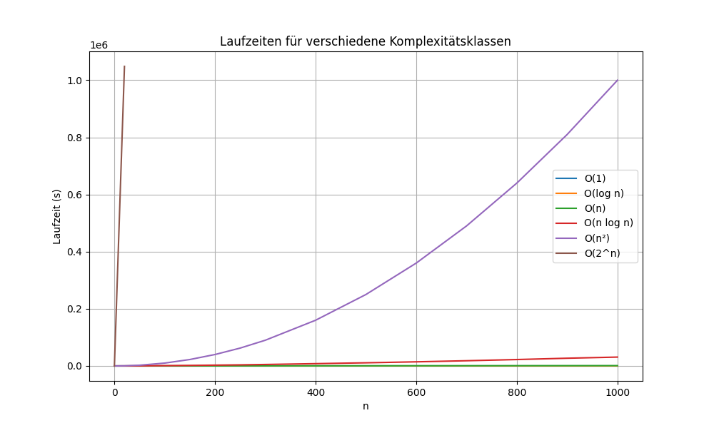
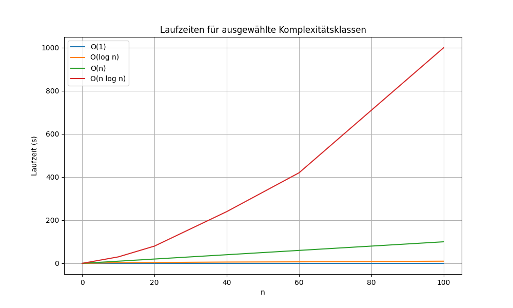

Algorithmen mit gleichem Wachstumsverhalten fasst man zu Komplexitätsklassen zusammen. Die Tabelle in Schritt 1 ist von „sehr schnell“ (oben) bis „praktisch nicht mehr berechenbar“ (unten) geordnet.
Diese Seite ist ein Lernpfad in fünf kurzen Schritten. Jeder Schritt hat dieselbe Form: Erst liest du kurz, worum es geht, dann zeigt dir ein Video (etwa 1 min, ohne Ton) die Idee oder den Code in Thonny, dann prüfst du mit einer kleinen Frage, ob du es verstanden hast. Halte die Videos ruhig an und rechne mit.
Zum Schluss findest du den Praxisbezug, eine Zusammenfassung und die Übungsaufgaben.
Zuerst verschaffst du dir einen Überblick über die wichtigsten Klassen. Dann vergleicht das Video die beiden einfachsten: den Zugriff über den Index, der immer gleich lang dauert, und die lineare Suche, deren Aufwand mit n wächst. Achte darauf, was jeweils passiert, wenn die Liste doppelt so lang wird.
| Komplexitätsklasse | Beschreibung | Beispiel |
|---|---|---|
| O(1) | konstanter Aufwand | Zugriff auf ein Element eines Arrays über den Index |
| O(log n) | logarithmischer Aufwand | binäre Suche in einem sortierten Array |
| O(n) | linearer Aufwand | Durchlaufen aller Elemente eines unsortierten Arrays (lineare Suche) |
| O(n log n) | quasilinearer Aufwand | Mergesort (immer); Quicksort im mittleren Fall |
| O(n²) | quadratischer Aufwand | Bubblesort, Insertionsort, Selectionsort; Quicksort im schlechtesten Fall |
| O(2n) | exponentieller Aufwand | naive rekursive Berechnung der Fibonacci-Folge; Rucksackproblem mit Brute Force (alle 2n Teilmengen prüfen) |
| O(n!) | faktorieller Aufwand | Problem des Handlungsreisenden (TSP) mit Brute Force (alle Reihenfolgen der Städte prüfen) |
Quicksort teilt die Liste an einem Pivotelement. Ist das Pivot jedes Mal das kleinste oder größte Element (z. B. bei bereits sortierter Liste und dem ersten Element als Pivot), entsteht nur ein Teilproblem der Größe n − 1. Dann ergeben sich n + (n − 1) + … + 1 Vergleiche, also O(n²). Im mittleren Fall und mit zufälligem Pivot liegt Quicksort in O(n log n).

Eine Liste wird von 500 auf 1000 Elemente verlängert. Wie ändert sich der Aufwand für den Zugriff liste[250]? Wie viele Vergleiche braucht die lineare Suche nach einem Wert, der nicht in der Liste steht, vorher und nachher?
Der Zugriff liste[250] bleibt ein Schritt (O(1)). Die lineare Suche braucht vorher 500, nachher 1000 Vergleiche – doppelt so viele (O(n)).
Die binäre Suche funktioniert nur in einer sortierten Liste: Sie vergleicht mit dem mittleren Element und sucht dann nur noch in einer Hälfte weiter. Im Video sucht sie die 16 in einer Liste mit 16 Zahlen. Achte darauf, wie schnell der Suchbereich schrumpft, und auf die Faustregel 210 = 1024 ≈ 1000.
Wie oft muss man 4096 halbieren, bis nur noch 1 übrig ist? Wie oft bei 4 194 304 = 222?
4096 = 212, also 12-mal. Bei 222 sind es 22 Halbierungen – obwohl die Zahl etwa tausendmal so groß ist, braucht man nur 10 Schritte mehr.
Schnelle Sortierverfahren wie Mergesort liegen in O(n log n), einfache wie Bubblesort in O(n²). Im Video rechnest du Beispiel 1 nach. Achte darauf, wie sich das Verhältnis der Schrittzahlen verändert, wenn n größer wird.
Zum Nachlesen steht die Rechnung in Beispiel 1:

Schätze für n = 100 die Schrittzahlen n · log2 n und n² sowie ihr Verhältnis ab. Tipp: 26 = 64 und 27 = 128.
log2 100 liegt zwischen 6 und 7 (genauer ≈ 6,6). Also n · log2 n ≈ 100 · 6,6 ≈ 660 und n² = 10 000. Das Verhältnis ist etwa 15 – es liegt zwischen den Werten 3 (n = 10) und 100 (n = 1000).
Danach: Aufgabe 2.2.4.1 – Laufzeiten hochrechnen.
Für große n rechnet man Schrittzahlen nicht mehr von Hand aus. Im Video berechnet ein kurzes Programm aus Beispiel 2 die Schrittzahlen der Klassen für n = 20 und n = 60. Neu sind dabei math.log2, math.factorial, der Potenzoperator ** und float(…), das große Zahlen als Zehnerpotenz zeigt – sie werden im Video an kleinen Beispielen in der Kommandozeile gezeigt.
Zum Nachlesen stehen Code, Ergebnisse und die Umrechnung in Zeit in Beispiel 2:
Was liefern math.factorial(5), round(8 * math.log2(8)) und float(2**60)?
120 (1 · 2 · 3 · 4 · 5), 24 (log2 8 = 3, also 8 · 3) und 1.152921504606847e+18, also ≈ 1,15 · 1018.
Brute-Force-Verfahren probieren alle Möglichkeiten durch: alle Teilmengen (2n) oder alle Reihenfolgen (n!). Im Video rechnest du die Schrittzahlen in Zeit um (Punkte 2 bis 4 von Beispiel 2). Achte darauf, was ein einziger zusätzlicher Gegenstand bewirkt und warum ein schnellerer Rechner hier kaum hilft.
Ein Brute-Force-Verfahren prüft alle 2n Teilmengen und braucht für n = 30 Gegenstände 1 Sekunde. Wie lange braucht es ungefähr für n = 40 und für n = 50?
+10 Gegenstände bedeuten · 210 = 1024. n = 40: etwa 1024 s ≈ 17 min. n = 50: etwa 1024 · 1024 s ≈ 1 050 000 s ≈ 12 Tage.
Danach: Aufgabe 2.2.4.2 – Klassen zuordnen.
Alltag: Die Suche im Telefonbuch deines Smartphones ist so schnell, weil die Kontakte sortiert sind und binär gesucht wird (O(log n)): Selbst bei einer Million Einträgen genügen rund 20 Vergleiche.
Beruf: Logistikplanerinnen und -planer (z. B. bei Paketdiensten) können die optimale Tour für 60 Stopps nicht mit Brute Force berechnen – O(n!) wäre unvorstellbar langsam. Sie setzen Heuristiken ein, die in Sekunden eine sehr gute, wenn auch nicht garantiert optimale Route liefern.
Die Komplexitätsklassen ordnen Algorithmen nach ihrem Wachstum: O(1) und O(log n) sind sehr schnell, O(n) und O(n log n) wachsen etwa so schnell wie die Eingabe, O(n²) ist für große n schon spürbar langsamer. Bis zu den polynomialen Klassen gelten Verfahren als effizient. Exponentielle und faktorielle Verfahren wie Brute Force über alle Teilmengen oder Reihenfolgen sind schon für mittlere n nicht mehr ausführbar – dort hilft nur ein besserer Algorithmus, nicht ein schnellerer Rechner.
Der Streamingdienst hat n = 100 Millionen Songs. Ordne jeder Aufgabe ihre Klasse zu und schätze die Dauer, wenn ein Python-Programm etwa 10 Millionen einfache Schritte pro Sekunde schafft. Erst schätzen, dann die Lösung öffnen.
| Aufgabe | Klasse? | Dauer? |
|---|---|---|
| den Song an Position 4 711 anzeigen | ||
| einen Titel in der unsortierten Liste suchen | ||
| einen Titel in der nach Titeln sortierten Liste suchen (binäre Suche, 2.2.8) | ||
| die Charts mit Mergesort sortieren (2.2.9) | ||
| die Charts mit Bubblesort sortieren | ||
| für eine Party jede mögliche Auswahl aus deinen 40 Lieblingssongs prüfen |
| Aufgabe | Klasse | Schritte | Dauer |
|---|---|---|---|
| Song an Position 4 711 | O(1) | 1 | sofort |
| Titel suchen, unsortiert | O(n) | bis 108 | bis 10 s |
| Titel suchen, sortiert | O(log n) | ≈ 27 | sofort |
| Charts mit Mergesort | O(n log n) | ≈ 2,7 · 109 | ≈ 4,5 Minuten |
| Charts mit Bubblesort | O(n²) | ≈ 1016 | ≈ 30 Jahre |
| alle Auswahlen aus 40 Songs | O(2n), hier n = 40 | 240 ≈ 1,1 · 1012 | ≈ 1,3 Tage – bei 60 Songs schon 3 600 Jahre |
Für die Einschätzung reicht die Klasse fast immer: Ob es 4 oder 12 Minuten sind, entscheidet der Rechner; ob es Minuten oder Jahre sind, entscheidet die Klasse.
Wichtige Komplexitätsklassen in aufsteigender Reihenfolge:
O(1) ⊂ O(log n) ⊂ O(n) ⊂ O(n log n) ⊂ O(n²) ⊂ O(2n) ⊂ O(n!)
Algorithmen bis einschließlich polynomialer Laufzeit (O(nk)) gelten als effizient. Exponentielle und faktorielle Laufzeiten sind schon für mittlere n praktisch nicht mehr ausführbar.
Auf einem Schulrechner wurden für Insertionsort mit zufälligen Zahlen folgende Laufzeiten gemessen:
| Anzahl n | 2 000 | 4 000 | 8 000 | 16 000 |
|---|---|---|---|---|
| Laufzeit in s | 0,21 | 0,83 | 3,35 | 13,4 |
Ordne jeweils eine Komplexitätsklasse zu und begründe kurz: (a) das größte Element einer unsortierten Liste finden, (b) in einem sortierten Array mit 1 Million Einträgen einen Namen suchen, (c) prüfen, ob eine Liste zwei gleiche Elemente enthält, indem jedes Paar verglichen wird, (d) alle möglichen Passwörter aus n Bits durchprobieren.